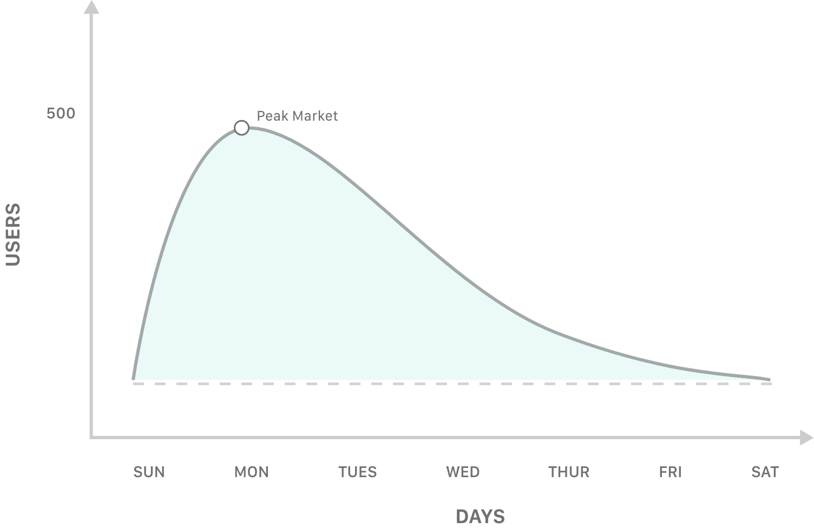
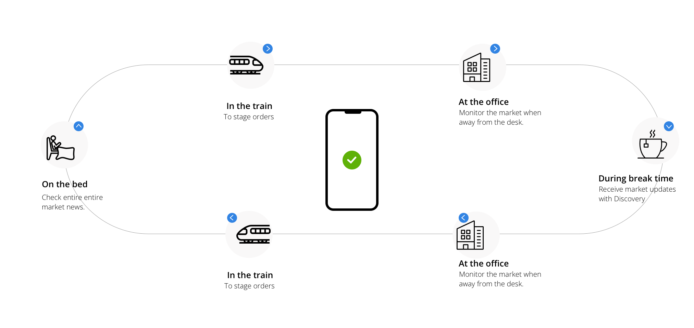
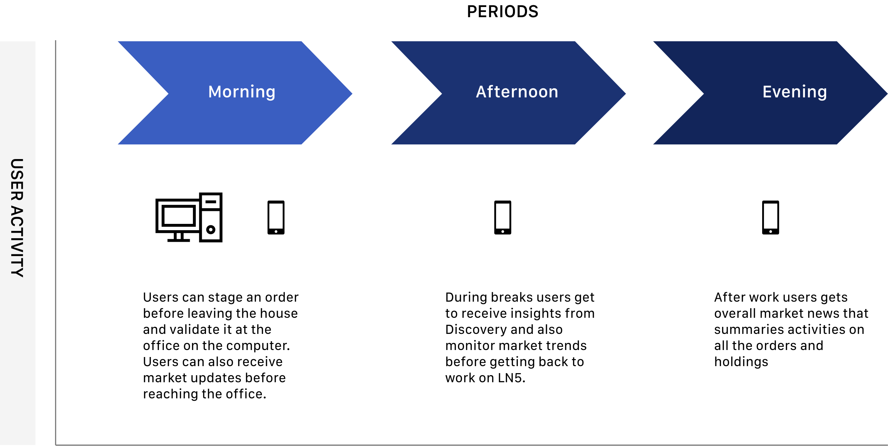
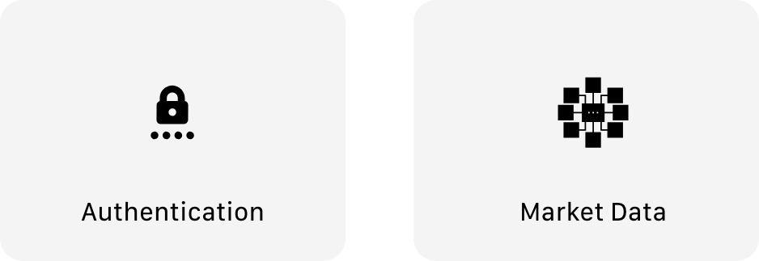
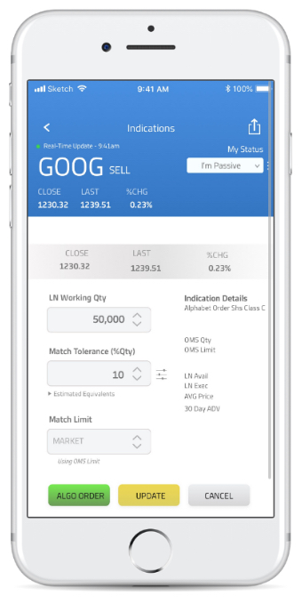

Overview
In 2018, I joined Liquidnet’s design team to help the team implement several features into their internal tools
Role
UI / UX- User experience
- Visual design
To comply with my non-disclosure agreement, I have omitted and changed confidential information in this project. The designs presented here may differ slightly from the original, and do not necessarily reflect the views of Liquidnet Holdings.
Liquidnet Summer Internship
For eleven weeks from May to August 2018, I undertook an internship at the headquarters of Liquidnet,in New York. Liquidnet is a global institutional trading network that connects more than 890 of the world’s top asset managers to
securely trade large blocks of assets without destabilizing the market. Liquidnet’s core business is its order management software application that its clients use to trade Business to business(B2B) and uses Artificial Inteligence
(AI) to analyze market data for it's clients. Liquidnet supports assets like fixed income, mutual funds and all kind of equities.
My roles
I was integrated into product team which is the most relevant arm of the global product development department. The team’s work was a crucial part of the company’s effort to advance its technology and innovation. Over this period, I handed-off design systems for diverse internal products, strategized possible flows for new tools, conducted rapid prototyping, wireframes, user testing, I also participated in brainstorming sessions, scrum meetings and design the UI screens for developer hand-offs. One of the major tasks was developing a new version of the Liquidnet mobile app.
I am allowed to briefly detail parts of this project because the exact feature implemented from this project do not or have very little impact on Liquinet Holding's IP's or customer data.
The problem
One of the core problems Liquidnet faced over the years was the sharp decline in user engagement after the markets closed on Mondays. Due to the nature of stock trading, users only made orders only on Mondays and had to wait to be notified about filed orders the following days. Due to this, clients were not taking full use of the software's market intelligence systems. User engagement is important because the more users have updated about the market the better results they get during trading. Several ideas were explored . and one of the ideas was to develop a mobile app but the compliance team had always been skeptical about handheld devices and its security. A lite mobile app version was built but with minimal functionality.
Design a system or tool to help improve user engagement on Liquidnet.
Context Study
We conducted a context study of the overall problem by accessing the user's click-through-rate and the product backlogs to understand the problem.

Key issues
1. Users spend more time away from their computers when orders are made.
Beyond making orders, most users spend time on other platforms for market data but with the acquisition of OTAS, things could change with its integration in Liquidnet.
2. Duration for orders to be filled.
Due to the duration of for an order to be filled, most users tend to only use Liquidnet when there updates and notification on their orders.
Development philosophy
Having in mind one of Liquidnet product philosophy, "Always on Technology" we went on to synthesize our findings and brainstorm on ideas.
Use Cases
Based on the insights gathered we were able to reemphasized the use case of a mobile app and how relevant it could be in promoting user engagement.

Research Analysis & Synthesis
Moving on to the next stage of development, we had to understand the internal and the finance industry compliance issues that we were faced with. The most prominent issues in our findings were two authentication and market data. Having this in mind we had to develop user flow that leveraged this insight.

Understanding compliance issues
Moving on to the next stage of development, we had to understand the internal and the finance industry compliance issues that we were faced with. The most prominent issues in our findings were two authentication and market data. Having this in mind we had to develop user flow that leveraged this insight.

Product Pitch
Liquidnet mobile
On all the individual dashboards users can search globally and with the specific page using tag-based search. The search system also shows a stock of recently search items so users user minimal memory load. An effective search system enhances affordance and improves the overall user experience.
Interactive Prototype
An interactive prototype that takes the user through the creation of an order after being notified and a look at other intefaces within the app of the app.
Discovery
I proposed the integration of AI-driven market insight platform (Discovery) by simplifying the data visualization to make it's easy to read.

Staging Order
Through a series of ideation and refinements, I proposed the staging order system. Users can build their order, select algorithms based on the device and stage the order. For an order to be updated user have to confirm it on the desktop application.
News
Using machine learning, textual information can be extracted from the Discovery data into simplified and readable content on the user's stock. This is tailored for each user based on their watchlisted stock.
Alerts & Notifications
To keep users up to date with orders users have access to an overview of floating and filled orders. The alerts are regular sent who there are negotiations on an asset.